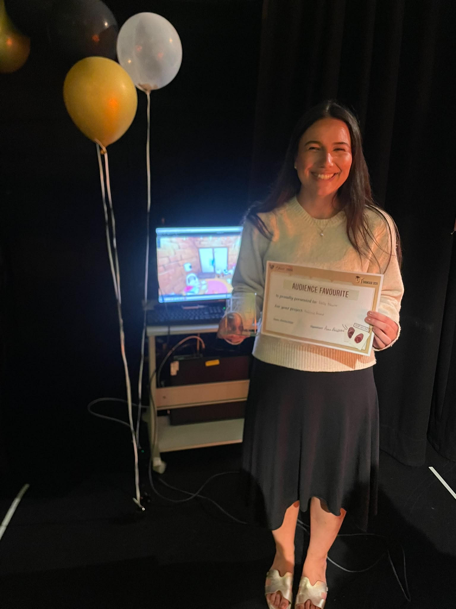
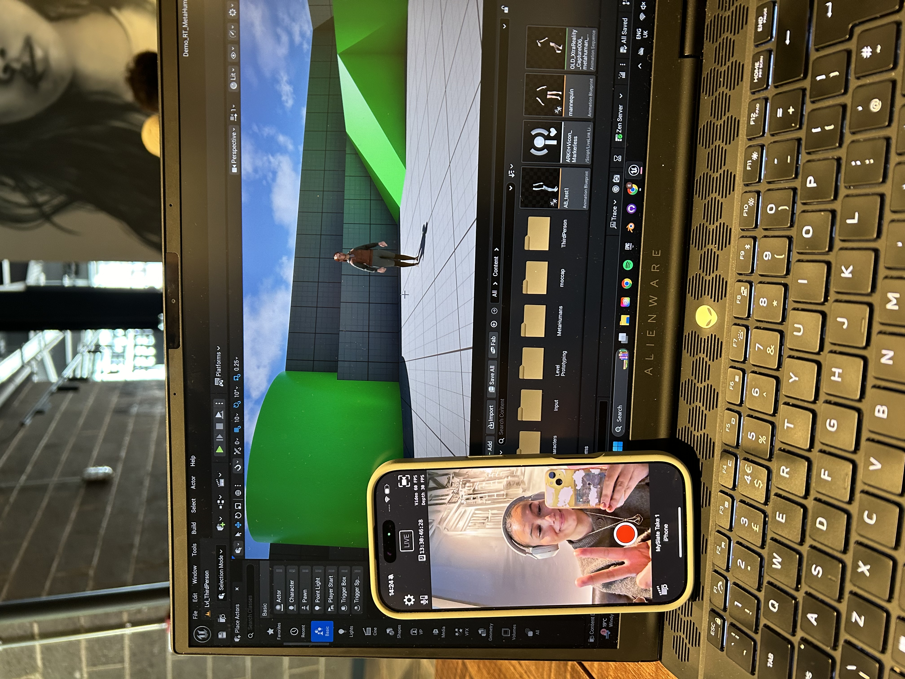
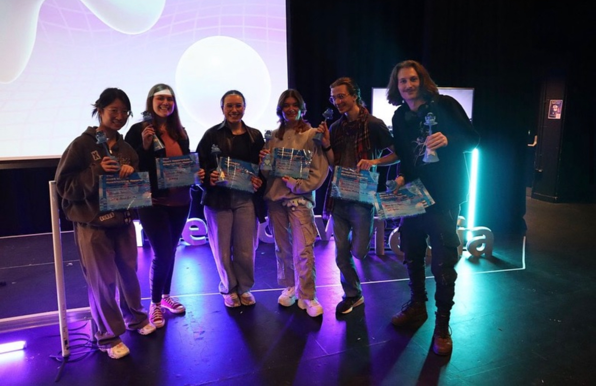
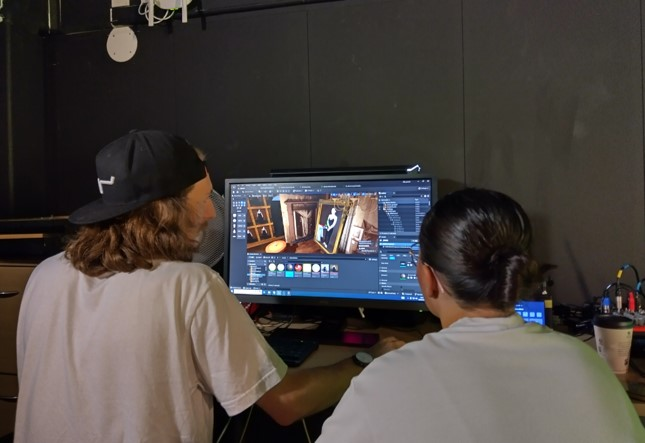

Emily
Blewitt
📍 Based in York / Manchester, UK
Hello,
I'm Emily, a Creative Technologist and UX Developer skilled in prototyping and delivering immersive environments with unique visual aesthetics. I focus on advocating for the end-user, leveraging robust technical workflows to engineer seamless, intuitive user experiences across digital design, real-time engines, and technical production pipelines.
Experienced in collaborating with creative R&D professionals, I rapidly navigate emerging ecosystems to integrate real-time data, motion capture, and virtual production assets into deployment-ready solutions.
Technical Toolkit

🎮 Engines & Frameworks
- Unreal Engine
- Unity
- SteamVR Toolkit
💻 Programming & Web
- C# Scripting
- HTML5 / CSS3
- JavaScript
🎨 Creative Production
- Blender
- Adobe After Effects & Premiere Pro
- Adobe Photoshop
- Adobe XD / Figma UIUX
- Canva


Industry Experience
-
Research Technician — University of York
Mar 2026 - Apr 2026
Engineered real-time data pipelines using Unreal Engine Live Link to stream multi-site motion capture performances into shared virtual concert environments.
-
Marketing & Events Coordinator — CoSTAR Live Lab
Jun 2025 - Dec 2025
Supported technical workflows retargeting mocap data to Unreal Engine MetaHumans and represented the lab on the CoSTAR Digital Presence working group.
-
Student Technician — University of York (ACT)
Oct 2024 - Present
Collaborated with staff to monitor technical lab spaces and maintain infrastructure requirements across hardware and software systems.
-
Technical Assistant — Dillmeadow Media
Aug 2024 - Oct 2024
Created 3D assets in Blender for environment sculpting, managed live sets in UE5.2, and drafted pitch decks for Meta production applications.